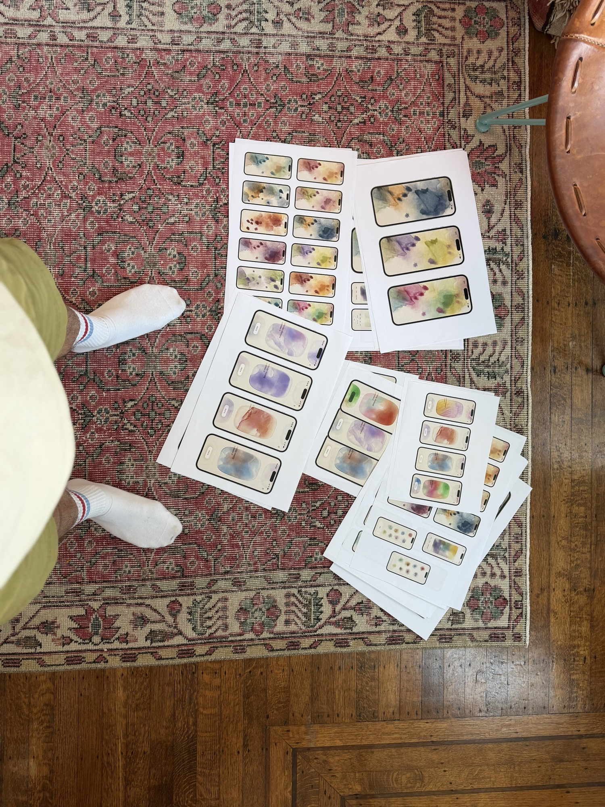
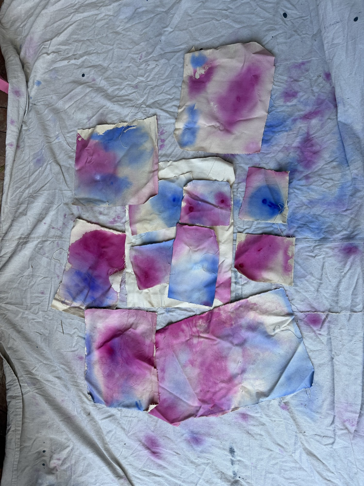

AI helped me build something I actually wanted to print.
October 1, 2026
Art for my living room
I was never inherently interested in technology or computers as a kid, unlike many people I’ve worked with in tech, who talk about building computers, writing software when they were young, etc. However, like many designers in tech, I went to school for graphic design. Computers were mostly just a means to an end for me, a way to make cool stuff that I otherwise couldn’t do by hand.
Design attracted me because in addition to utility, I wanted to make things that were visually interesting, beautiful, and that elicited strong feelings or emotions in people. There are opportunities to do this designing software, but they have felt few and far between for me lately with such a focus on getting features out the door.
Procedural shaders have always been something I wanted to add to my toolkit, but I never took the time to learn much about them. With this new technology at my disposal, it felt like a good time to try them out.
I’d been working on trying to make art for my living room using watered-down liquid acrylic that soaks into a wet canvas. I hadn’t had much success achieving the look and feel I was going for.

I thought it would be an interesting challenge to digitally reproduce these physics and an opportunity to play with Apple’s Metal for the first time.
Simulating ink
My first pass was creating a canvas that simulated liquid acrylic ink on a wet surface and reacted to device orientation using the gyroscope.
An effect I like is what happens when the ink has a lot of momentum. The front edge can’t stay smooth, because any spot on the edge that’s a little thicker flows a little faster, pulls ahead of the ink around it, and keeps pulling away until the edge splits into these “fingers.” I later learned the actual name for this phenomenon is indeed “fingering instability.”
I had fun tweaking the feel and figuring out what the abstractions should be:
- How wet the paint is
- How fast a fresh wash spreads
- How quickly it dries into stains and tide lines
- How hard it leans into a tilt, and how long it takes to notice one
- How much pigment piles up in the dark line at a wash’s leading edge
- etc.
Most of the work was figuring out how all those values played off each other. Underneath, the paint is really two layers, a wet film and a dried stain, and drying moves pigment from one into the other. Rehydration runs that backwards. Re-wet a patch and the dried stain dissolves back into the film, so old marks wake up and move again.
This was surprisingly fun to play with. When I was bored or waiting in line, I’d open it up and play with the ink, trying to make new patterns and stains.
Ink as a UI material?
Could this have a practical application as a UI material? I’d been noodling on a few mental-health-focused apps, which was a bit of the inspiration for this particular look and feel.
Cards seemed like a plausible application.
I like that the app feels alive. It responds not just to what I intentionally do, but to the incidental reality of how I use it.
If I lean or lay down, the ink shifts and drips with me.
If I pause to read, it has time to soak in and leave stains and tide lines.
If I look away, it keeps moving, leaving a little record of the time that has passed.
What about interactions and motion?
If a card moves, could the ink inside it slosh around as if invisible bounds are pushing the ink around a canvas?
There’s a lot more to explore and pressure test for practical applications, but I wanted to move on and test freeing the ink from hard bounds while still using it as the interface material.
Mood picker
I’ve always wanted to design a mood picker app.
What if feelings were represented by ink?
This still felt too contained. I liked the idea of the ink “fireworking.”
I wanted to push the physics and make the app feel alive and organic.
I started with traditional buttons and stuff for going in and out of feelings, but it was killing my serene vibes 🧘♂️😌.
Besides, “Always make it fluidddd.”
For a mood picker, being fun to use feels practical. If I enjoy using it, I am more likely to make it a habit.
This is the extent of what I’ve built for this one. Figured I’d build out the tracking part later. I wanted to move on to adding bounds to the ink once again.
A gallery of moods
I had another variation of the mood picker app in mind - what if selecting moods slapped ink onto a canvas? I liked the idea of being able to browse a visual gallery of my emotion history.
I’ve always felt like my past emotions are still in me somewhere. To represent that, I rehydrated the ink as I scrolled through previous entries, briefly bringing each feeling back to life.
What will become of this? I’m not sure, but it made me optimistic and even excited about my future in design. It reconnected me with what I value in my work and where I want to spend my energy: more focus on form and feeling, and how they can make function more effective.
The process had plenty of ups and downs. Sometimes I felt maximally powerful. Other times I wanted to chuck my computer. I still all-caps-yell at my agents daily.
The bigger lesson was to stay open-minded and fight my own curmudgeonliness towards change. I might write more about my actual workflow, what worked and what didn’t, new stuff I tried, etc.
Anyway, I’ve found a lot of relief in staying curious and hope y’all do as well!